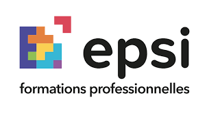
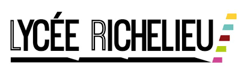

root@paulyann:~# ./whoami_
Curieux, Rigoureux et Passionné
Passionné par l'informatique, je suis actuellement en BTS SIO option SISR. Je souhaite mettre en pratique mes compétences en administration systèmes, réseaux et sécurité.
Curieux et doté d'une forte capacité d'apprentissage, je souhaite évoluer aux côtés de professionnels et contribuer à des projets d'infrastructure concrets.
USER_CONFIG.JSON
- LOCATION Rueil-Malmaison (92)
- DRIVER_LIC Permis B & A
- LANG_EN Niveau B1 (Technique)
- HOBBIES Jeu Vidéo, Hardware, Rap
Systèmes & Virtualisation
Réseaux
Dév & Outils
Mon Parcours & Expériences Passées

Paritel (Alternance)
17 août 2026 - Septembre 2027 | Bois-Colombes
Apprenti Support Technique Client
- Assistance et résolution des incidents techniques clients
- Diagnostic, suivi et accompagnement des utilisateurs
Global Knowledge (Stage)
Mai 2023 - Juin 2023 | Rueil-Malmaison
Assistant informatique
- Mise en place et configuration d'un réseau fonctionnel incluant un routeur Cisco
- Déploiement d'environnements virtualisés (VMware)
- Développement d'outils simples en HTML/CSS, PHP et SQL
- Administration de systèmes (Windows Server Core, Raspberry Pi OS)
- Gestion et exploitation d'une base de données MySQL

EPSI Paris (Formation)
Sept. 2022 - Mars 2024
Socle Numérique 1 & 2
Développement web (HTML/CSS, PHP, SQL, Git), administration systèmes & réseaux (Linux, Windows Server, VMware) et bases de données.

Lycée Richelieu (Bac)
Sept. 2018 - Juill. 2022
BAC STI2D SIN
Obtention du baccalauréat. Projets numériques (Arduino, HTML/CSS), exemple : système de détection d'objets dans une poubelle via capteurs.
Global Knowledge (Stage)
Novembre 2017 | Rueil-Malmaison
Stagiaire d'observation
- Maintenance hardware : réparation/changement clavier, souris, démontage PC
- Installation et configuration de système d'exploitation (Windows)
Outils & Environnements
 VMware
VMware Cisco
Cisco Windows
Windows Linux
Linux HTML5 / CSS3
HTML5 / CSS3 Git
Git MySQL
MySQL VS Code
VS Code